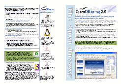
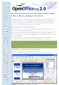
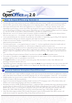

OpenOffice.org 2.0 Marketing Materials
Project: Marketing ProjectDescription: OpenOffice.org 2 marketing materials in various formats.
| Item | Preview | Info |
| Product Flyer English A3 |  (pdf format, 600kb) |
Title:
OOo 2.0 Product Flyer Market: General Synopsis: Screenshots and features of main components; target markets and benefits Usage: Print in colour on A3 double-sided and fold to give a 4 page A4 booklet. Works well with the Product Spec. as an insert. License: PDL Language: English Project: Marketing Comments: Source files are available here: ooo2prodflyera3en.odt Issue: 47686 |
| Product Flyer English A4 |  (pdf format, 600kb) |
Title:
OOo 2.0 Product Flyer Market: General Synopsis: Screenshots and features of main components; target markets and benefits Usage: Print in colour on 4 pages A4. License: PDL Language: English Project: Marketing Comments: Source files are available here: ooo2prodflyera4en.odt Issue: 47686 |
| Product Flyer Translator's Kit | Title:
OOo 2.0 Product Flyer Translator's Kit Market: General Synopsis: Source code for screenshots used in the Product Flyer Usage: Enables translators to produce screenshots in local languages. License: PDL Language: English Project: Marketing Comments: Source files are available here: translators_kit.tgz |
|
| Product Specification English A4 |  (pdf format, 90kb) |
Title:
OOo 2.0 Product Specification Market: General Synopsis: List of major product features by components plus what's new in OOo 2.0. Can be used as an insert with the A3 Product Flyer Usage: Print in colour on 2 pages A4. License: PDL Language: English Project: Marketing Comments: Source files are available here: ooo2prodspeca4en.odt Issue: 47476 |
| Product Presentation English | (view on-screen in new browser window) |
Title:
OOo 2.0 Product Presentation Market: General Synopsis: List of major product features and screenshots by component with on-screen navigation buttons. Usage: Pages are formatted for screen presentations. License: PDL Language: English Project: Marketing Comments: Source files are available here: ooo2prodintroen.odp Issue: 53340 |
New translations are always welcome - please upload with a covering note to the appropriate issue.